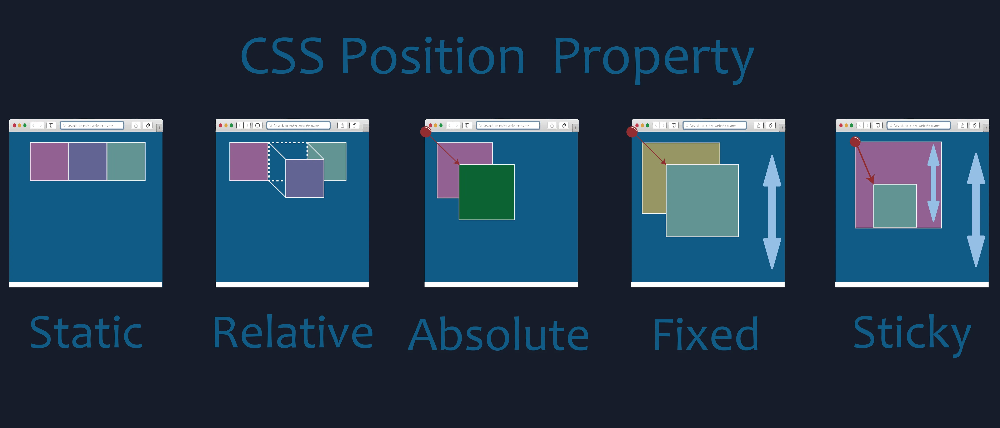

Transiciones
Las transiciones se basan en un principio muy básico: conseguir un
efecto suavizado entre un estado inicial y un estado final al realizar
una acción. Por ejemplo, utilizando la pseudo-clase :hover podemos
cambiar las propiedades CSS aplicadas a un elemento HTML cuando el
usuario pasa el mouse por encima del elemento. Si, además, aplicamos
transiciones ese cambio se visualizará de forma más pausada y orgánica
generando una sensación de movimiento
⚠️ Importante: No todas las propiedades de CSS son transicionables. Por regla general, las propiedades cuantificables son transicionables.
Propiedades de transición
transition-property- ¿Qué propiedades van a transicionar?transition-duration- ¿Cuánto tiempo dura la transición?-
transition-timing-function- ¿Cómo se distribuyen los milisegundos de duración? transition-delay- ¿Cuánto tarda la transición en arrancar?-
transition(shorthand) - property duration timing-function delay(?)
Tipos de transiciones
Transición de entrada
Transición que se encarga de aplicar un estilo al momento de lanzar la transición.
Transición de entradaTransición de entrada-salida
Transición que se encarga de aplicar un estilo al momento de lanzar la transición y al momento de que ya no se cumpla la condición para aplicar la transición de entrada.
Transición de entrada-salidaTransición Múltiple
Aplicar transición a varias propiedades de CSS en entrada y salida en una sola línea
Transición múltipleEjemplo: contenido expandible
Transformaciones
Las transformaciones son funciones de CSS que permiten cambiar la posición, la dirección o el tamaño de un elemento un elemento del HTML
Funciones disponibles
-
translate(x, y)- mueve el elemento en el eje de coordenadas rotate(deg)- rota el elemento (grados, sentido horario)scale(factor)- agranda o achica (1 = original, 0.5 = mitad)
Ejemplos
Ejemplo real: Tarjeta de imagen
Combinando scale() y translate() podemos crear efectos
como las tarjetas de galería que se ven en muchos sitios web. Al pasar el mouse,
la imagen hace zoom y un texto se desliza desde abajo.

Animaciones
Las transiciones permiten cambiar un elemento entre dos estados. Por
su parte, las animaciones permiten el cambio entre múltiples estados
e, incluso, es posible plantear una repetición infinita de estos
cambios.
Una animación, entonces, es la suma de varias transiciones. Estás
transiciones son conocidas como fotogramas y se arman utilizando la
propiedad @keyframes
Propiedades de animación
animation-name- Nombre de la animación a aplicar.animation-duration- Duración de la animación.animation-timing-function- Ritmo de la animación.animation-delay- Retardo en iniciar la animación.-
animation-iteration-count- Número de veces que se repetirá. (infinite === nunca termina) -
animation-play-state- Estado de la animación. (usando JS permite iniciar/pausar la animación) -
animation(shorthand) - name duration timing-function delay iteration-count